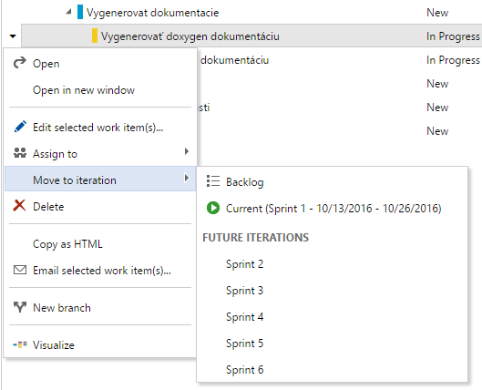
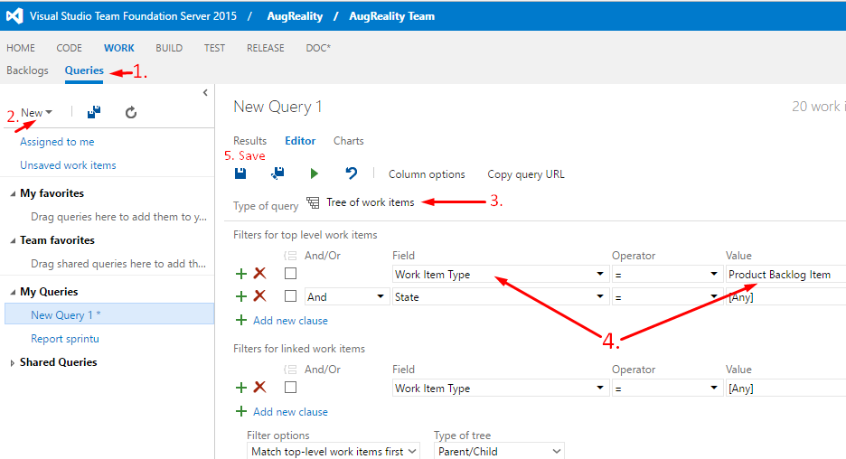

TFS metodika¶
Všeobecná metodika na manažment úloh v tíme¶
Pridanie novej úlohy¶
- Pri každej úlohe je potrebné uviesť opis. Opis si k úlohe zadáva ten, kto si ju vyberie.
- Uviesť odhadovaný čas dokončenia.
- Opis musí byť podrobný, aby každému členovi bolo jasné, čo ma vykonať po pridelení úlohy.
Rozdeľovanie úloh¶
- Každý si vyberie (potiahne) úlohu/úlohy, ktorá/é majú najvyššiu prioritu.
- Ak ostanú nepridelené úlohy, študentský vedúci tímu pridelí členom zvyšné úlohy.
Kedy je úloha hotová¶
- Dokumentácia: Keď je znovu vygenerovaná.
- Kód: Potrebné spraviť code review a vykonať pull request do vetvy, ktorá sa bude mergovať.
- Testy: Keď je spravený report z testu.
- Zápisnica: Keď je nahratá vo formáte pdf na stránke tímu.
TFS metodika¶
- Adresa TFS: https://tfs.fiit.stuba.sk:8443/tfs/ (Potrebné sa lognúť 2x)
- Projekt: Just18
Pridávanie úloh¶
- Úlohy podobného charakteru priradíme do spoločného backlog itemu.
- Pri pridávaní úlohy sa automaticky nastaví stav ‘To Do’.
- V prípade objavenia chyby, je potrebné vytvoriť novú úlohu typu Bug (Chyba)
- Odhadovaný čas dávame na backlog itemy, rovnako ako aj Acceptance Criteria (predpripravený field pri rozkliknutí backlog itemu v TFS).
- POZOR: TFS podporuje estimáciu času v IBA v hodinách.
Úlohy (tasky) sa môžu nachádzať v troch stavoch: * To Do * In Progress * Done Nesplnené úlohy, ktoré sa nestihli dokončiť v danom šprinte, presunieme do nasledujúceho šprintu.
Vytváranie exportov z TFS¶
Navod na stranke: https://msdn.microsoft.com/en-us/library/dd286627(v=vs.110).aspx
URL: https://tfs.fiit.stuba.sk:8443/tfs/
Login: ako do AIS-u
Pred prvým exportom je potrebné si vytvoriť query, ktoré vráti stav úloh v danom šprinte. Návod na vytvorenie quory:
Excel¶
- V hlavnom menu vybrať záložku TEAM (mala by byť vpravo hore).
- Klik na New List ( umiestnená na ľavo pod záložkou File/Súbor).
- Vybrať novo vytvorené query:
- Hotovo